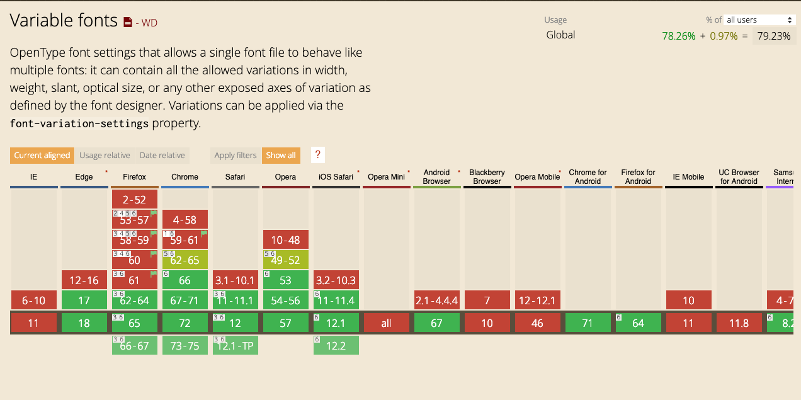
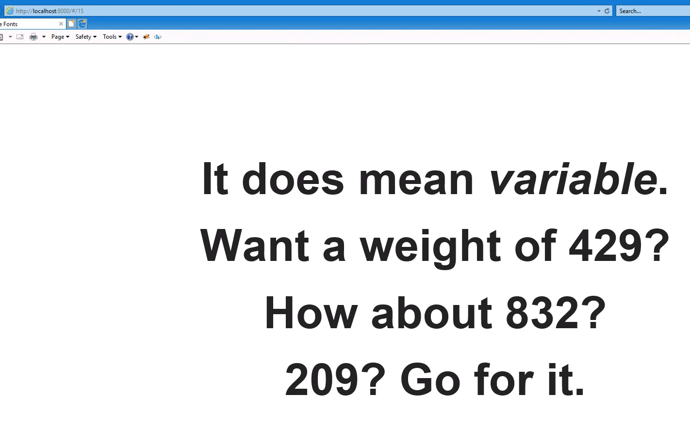

Variable Fonts
What they are,
and why they matter
Typography Today
Type variation
Is a fundamental
tool of visual design.
It is what allows designers to manage visual emphasis of written content.
Cost
File weight
File requests
Want a bold?
That's another file.
Want a light weight?
That's another file.
Want an italic?
That's another file.
On the web, font weights are usually expressed as numbers.
light = 200
regular = 400
bold = 700
black = 900

Enter:
Variable Fonts
What is a variable font?
“a single font file that behaves like multiple fonts”.https://blog.typekit.com/2016/09/14/variable-fonts-a-new-kind-of-font-for-flexible-design/
What does this mean?
Multiple Weights…
…one file

It does mean variable.
Want a weight of 429?
How about 832?
209? Go for it.
How do you use a
Variable Font?
(On the web)
@font-face {
font-family: "Source Sans Pro";
font-weight: 200 900;
font-style: normal;
src: url("../../SourceSansVariable-Roman.ttf.woff2") format("woff2"),
url("../../SourceSansVariable-Roman.ttf.woff") format("woff"),
url("../../SourceSansVariable-Roman.ttf") format("truetype");
}
@font-face {
...
font-weight: 200 900;
...
}
h2 {
font-weight: 600;
}
How about 832?
Browser support?
IE11?

html {
font-family: 'NonVariableFont', sans-serif;
}
@supports (font-variation-settings: normal) {
// the browser will calculate which fonts to use
// before downloading resources
html {
font-family: 'VariableFont', sans-serif;
}
}
… one more thing …
… it’s not just weights…
… it can be almost anything!